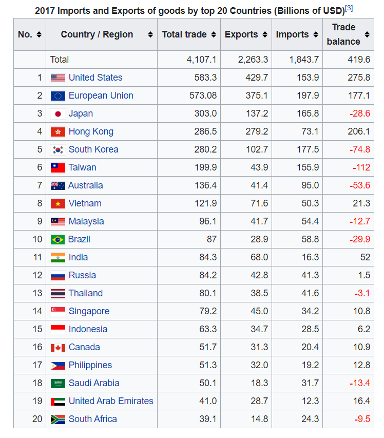

The Ideal China Boycott
 Ever since the invasion of the Galwan Valley took place by the Chinese Military,
there has been a bellow of unrest throughout the nation. Angry Protestants have gone so far as to destroy
shops selling Chinese products. There is indeed a wave of unrest in the country. This has also been followed
by the uproar to boycott all Chinese Products and hence potentially threaten the Chinese Economy. I would
like to put my two cents on the topic.
Ever since the invasion of the Galwan Valley took place by the Chinese Military,
there has been a bellow of unrest throughout the nation. Angry Protestants have gone so far as to destroy
shops selling Chinese products. There is indeed a wave of unrest in the country. This has also been followed
by the uproar to boycott all Chinese Products and hence potentially threaten the Chinese Economy. I would
like to put my two cents on the topic.

Let’s start by understanding what impact would China have if India stops all
imports from China. China exports roughly $68bn worth of goods, while its global export is around $2.49tn
(2018). Which means that India accounts for only 2.73% of their total export. This amount is very nominal
for a growing economy of China. While, incessant boycotting like this would prove catastrophic to us
Indians.
We are enormously dependent on China for Chemicals, Fuels, Technology, Medical
equipment, Cotton, etc. That is, all our sectors are in some-way or the other, dependent on the Chinese.
These facts beg the question, is boycotting China really a good idea? Isn’t this
going to hurt us more than them?
Well, the answer is a resounding NO! It’s foolish to act in rage over the
events, we tend to find solace in acting rashly, seldom thinking of the long-term consequences. Instead, I
propose a long-term plan, one that would massively benefit us and destroy the Chinese from the very spine.
 We must initiate a movement to create the products in-house, with very high R&D
and dynamic in scale. These products must directly compete with price and quality of that of the Chinese
goods. For this, we desperately need high-quality talent, expensive machinery and some highly-driven
entrepreneurs. Sectors of Electronic goods, chemicals and high-end machinery must be revolutionized. This
movement may take a long time to reach its goal, but this is one way in which we can truly emerge
victorious.
We must initiate a movement to create the products in-house, with very high R&D
and dynamic in scale. These products must directly compete with price and quality of that of the Chinese
goods. For this, we desperately need high-quality talent, expensive machinery and some highly-driven
entrepreneurs. Sectors of Electronic goods, chemicals and high-end machinery must be revolutionized. This
movement may take a long time to reach its goal, but this is one way in which we can truly emerge
victorious.
This idea has been previously performed on 2-wheeler automobiles. Check this
really great article I found:
Click
Here.
 India is a land of raw youth talent. This energy is pointless without the right
direction. The youth must dream to be the leaders of change, to kindle the fire of home-grown innovation and
be the providers of the world. Protests and causing riots aren’t going to take us anywhere. This is
therefore a call-to-action to all the readers, to work towards a revolution, to put our vigour in the right
direction. And this would be the sweetest revenge we can give to China – replace their domination!
India is a land of raw youth talent. This energy is pointless without the right
direction. The youth must dream to be the leaders of change, to kindle the fire of home-grown innovation and
be the providers of the world. Protests and causing riots aren’t going to take us anywhere. This is
therefore a call-to-action to all the readers, to work towards a revolution, to put our vigour in the right
direction. And this would be the sweetest revenge we can give to China – replace their domination!